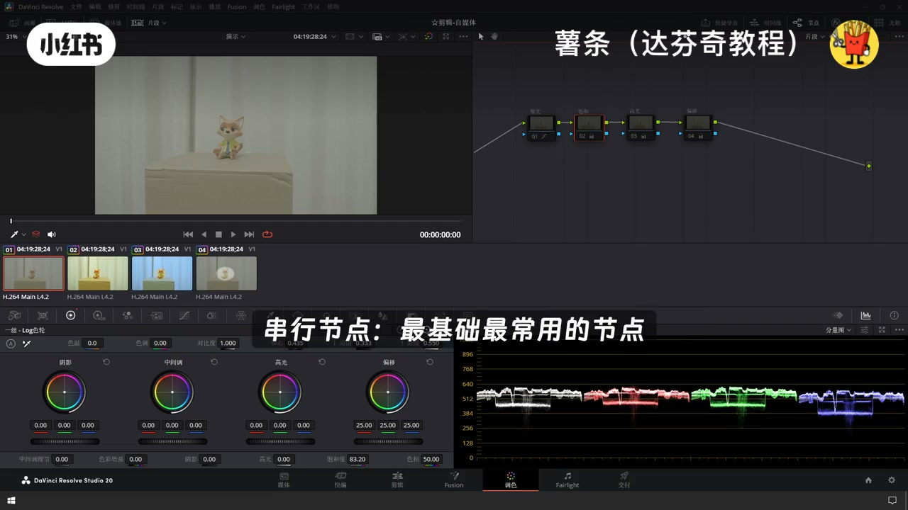
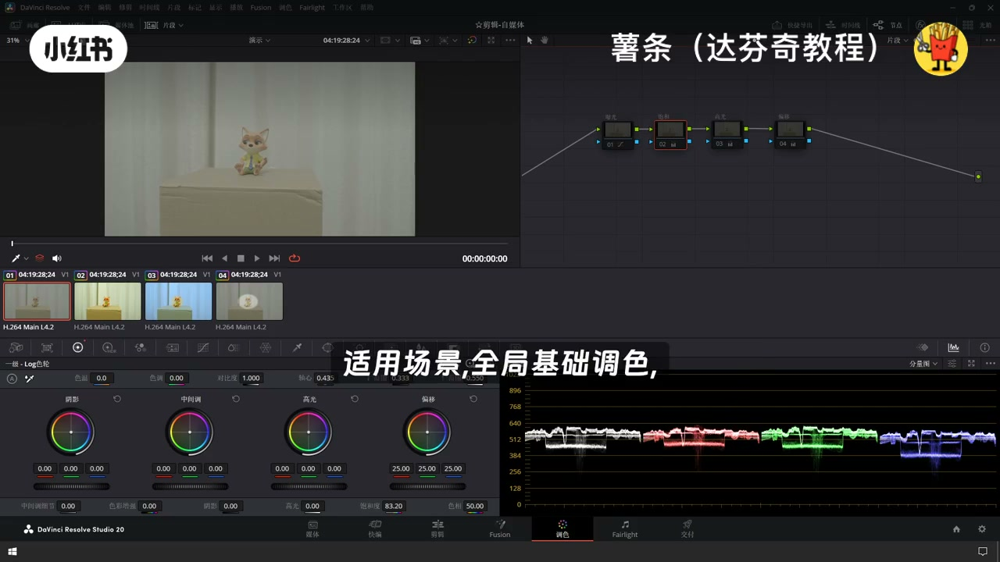
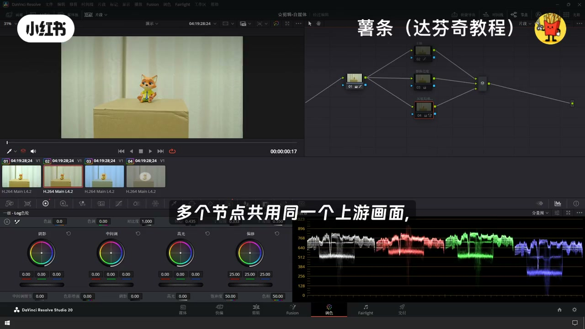
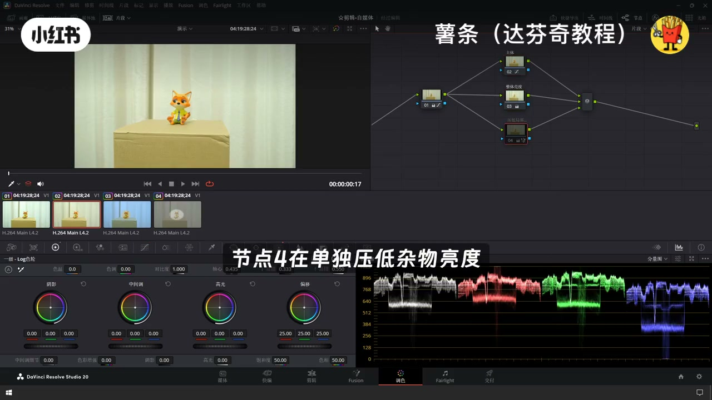
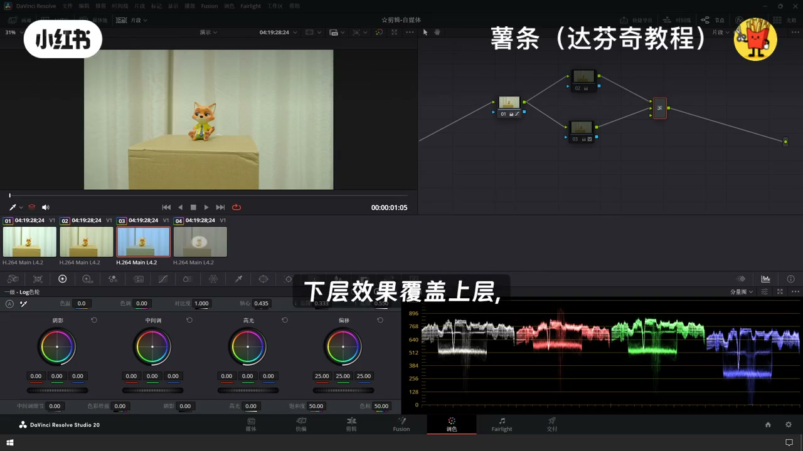
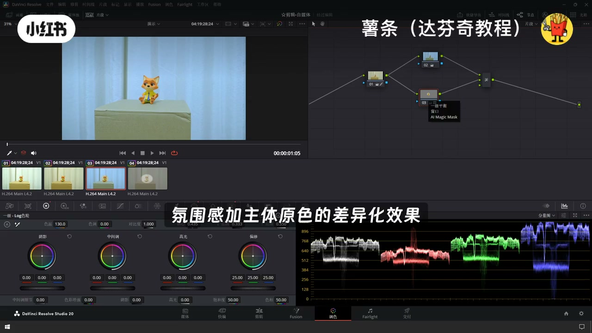
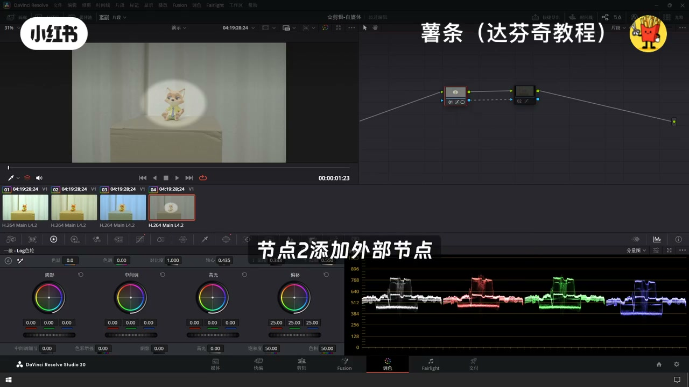

内容要点
「达芬奇调色节点｜新手一看就懂🔥 刚打开达芬」教程要点：刚接触达芬奇,一打开节点面板就头晕眼花,无从下手 → 不用死计复杂操作,一分钟理清节点底层逻辑 → 零基础新手也能快速上手 → 核心底层逻辑先劳计,达芬奇里的每一个节点…
知识结构
刚接触达芬奇,一打开节点面板就头晕眼花,无从下手
节点三调整高光,节点四色彩偏移
下层效果覆盖上层,搭配蒙版使用,创作空间极强
- 刚接触达芬奇,一打开节点面板就头晕眼花,无从下手
- 不用死计复杂操作,一分钟理清节点底层逻辑
- 零基础新手也能快速上手
- 核心底层逻辑先劳计,达芬奇里的每一个节点
- 就是单独的一部调色操作
刚接触达芬奇,一打开节点面板就头晕眼花,无从下手
00:00–00:42刚接触达芬奇,一打开节点面板就头晕眼花,无从下手
刚接触达芬奇,一打开节点面板就头晕眼花,无从下手；不用死计复杂操作,一分钟理清节点底层逻辑；零基础新手也能快速上手；核心底层逻辑先劳计,达芬奇里的每一个节点；就是单独的一部调色操作；一个节点只负责一件事,修改互不牵连,灵活好调整；这就是节点调色的核心优势；串行节点,最基础最常用的节点；按照顺序叠加,软件默认基础节点,操作逻辑最简单；画面按照顺序一步接一步串联流转；上一个节点的完整画面,传递给下一个节点；调色效果层层叠加；试用场景,全局基础调色；举例,节点一叫准爆光,节点二优化爆合度

00:43–01:25节点三调整高光,节点四色彩偏移
节点三调整高光,节点四色彩偏移；朴皱清晰,后期想修改任意一步,单独调整对应节点即可；并行节点,分区调色,互不干扰；多个节点共用同一个上游画面；彼此独立运行,不会互相影响；完成独立调整后自动合并输出；试用场景,画面多区域分开精细化处理；举例,同一画面下,节点二提亮主体爆合度；节点三提升整体亮度,节点四再单独压低杂物亮度；多路调整同步进行,避免调色参数互相冲突；最终叠加输出；涂层节点,完全等同于PS涂层逻辑；支持多种合成模式；重点区别,层级反向覆盖


01:24–02:04下层效果覆盖上层,搭配蒙版使用,创作空间极强
下层效果覆盖上层,搭配蒙版使用,创作空间极强；试用场景,举步色彩反差,创意风格调色；举例,节点二整体统一调整冷色调色温；节点三用蒙版框选出主体,单独还原正常色温；轻松实现背景氛围感加主体原色的差异化效果；外部节点,选区反选效率神器；核心作用就是一键反选蒙版选区；省去重复抠图画蒙版的麻烦；试用场景,快速反选蒙版遮罩；举例,节点一先用节点框选主体并提亮；节点二添加外部节点,自动反选画面背景；再进行压按背景,一键强化画面对比度；操作高效又简单




口述/画面要点（40段）
结合 Whisper medium 与画面大字整理；专有名词已校对。
刚接触达芬奇,一打开节点面板就头晕眼花,无从下手
不用死计复杂操作,一分钟理清节点底层逻辑
零基础新手也能快速上手
核心底层逻辑先劳计,达芬奇里的每一个节点
就是单独的一部调色操作
一个节点只负责一件事,修改互不牵连,灵活好调整
这就是节点调色的核心优势
串行节点,最基础最常用的节点
按照顺序叠加,软件默认基础节点,操作逻辑最简单
画面按照顺序一步接一步串联流转
上一个节点的完整画面,传递给下一个节点
调色效果层层叠加
试用场景,全局基础调色
举例,节点一叫准爆光,节点二优化爆合度
节点三调整高光,节点四色彩偏移
朴皱清晰,后期想修改任意一步,单独调整对应节点即可
并行节点,分区调色,互不干扰
多个节点共用同一个上游画面
彼此独立运行,不会互相影响
完成独立调整后自动合并输出
试用场景,画面多区域分开精细化处理
举例,同一画面下,节点二提亮主体爆合度
节点三提升整体亮度,节点四再单独压低杂物亮度
多路调整同步进行,避免调色参数互相冲突
最终叠加输出
涂层节点,完全等同于PS涂层逻辑
支持多种合成模式
重点区别,层级反向覆盖
下层效果覆盖上层,搭配蒙版使用,创作空间极强
试用场景,举步色彩反差,创意风格调色
举例,节点二整体统一调整冷色调色温
节点三用蒙版框选出主体,单独还原正常色温
轻松实现背景氛围感加主体原色的差异化效果
外部节点,选区反选效率神器
核心作用就是一键反选蒙版选区
省去重复抠图画蒙版的麻烦
试用场景,快速反选蒙版遮罩
举例,节点一先用节点框选主体并提亮
节点二添加外部节点,自动反选画面背景
再进行压按背景,一键强化画面对比度